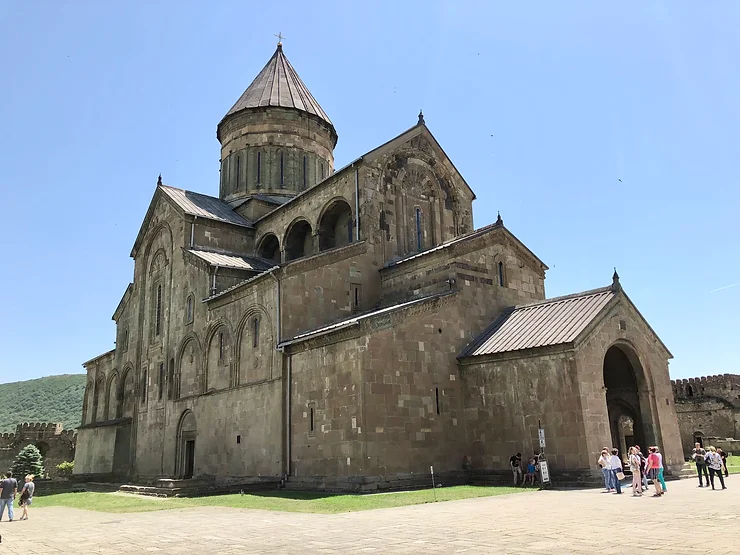

History of Georgia
Georgia, located at the crossroads of Europe and Asia, has a history that spans thousands of years. Its strategic location made it a center of trade, culture, and conflict. Known as *Sakartvelo* in Georgian, the country boasts a rich heritage influenced by its interactions with neighboring empires.
Ancient Georgian kingdoms such as Colchis and Iberia were mentioned in Greek and Roman sources. In the 4th century, Georgia adopted Christianity, making it one of the earliest nations to do so. Over the centuries, it faced invasions from the Mongols, Persians, and Ottomans, yet managed to preserve its unique culture and identity. Learn more on Wikipedia.
Regions of Georgia and Their Famous Dishes
Kartli
Known as the heart of Georgia, Kartli is home to the capital, Tbilisi.
Famous dish: Khinkali (Georgian dumplings)
Kakheti
Famous for its vineyards and wine production.
Famous dish: Mtsvadi (Georgian barbecue)
Samegrelo
A region with unique spicy dishes and rich culture.
Famous dish: Elarji (cornmeal with cheese)
Explore more about Georgian cuisine on Wikipedia.
History of Georgian Flags
Over the centuries, Georgia has had various flags representing its kingdoms and eras. Below are some examples:

The current flag, known as the Five Cross Flag, was adopted in 2004 and reflects the nation's Christian heritage.
The flag of the First Georgian Republic (1918-1921) symbolized independence after centuries of foreign domination.